맨헌트는 서바이벌 + 액션 어드벤쳐 컨셉의 리얼리티 방송으로, 미 해군 특수부대인 네이비 씰 출신인 조엘 램버트가 특정 지역에 잠입하여 자신을 추적하는 각국의 군 특수부대나 경찰특공대를 따돌리며 지정된 탈출 지점까지 잡히지 않고 탈출하는 과정을 추적하는 내용의 방송이다. 쉽게말해 메탈기어 솔리드의 리얼리티 방송 버전
조엘에게는 단검, 밧줄 같은 그야말로 서바이벌에 필요한 최소한의 장비만 지급되는 반면 추적대는 특수부대 본인들은 물론이고 사용가능한 모든 전략적 자산을 총동원할 수 있다.
이 프로에 대한민국 경찰특공대(제주지방경특)가 출연했는데...
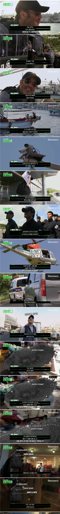
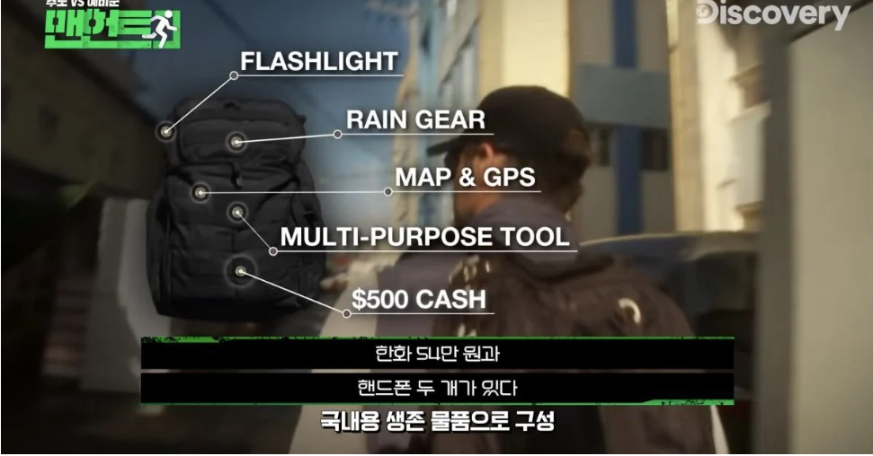
런 스타트
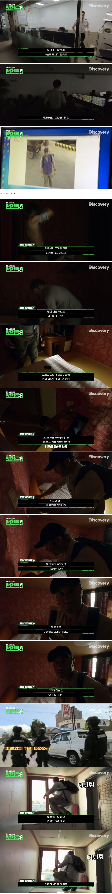
대실해서 옷갈아 입고 런 ε=ε=ε=
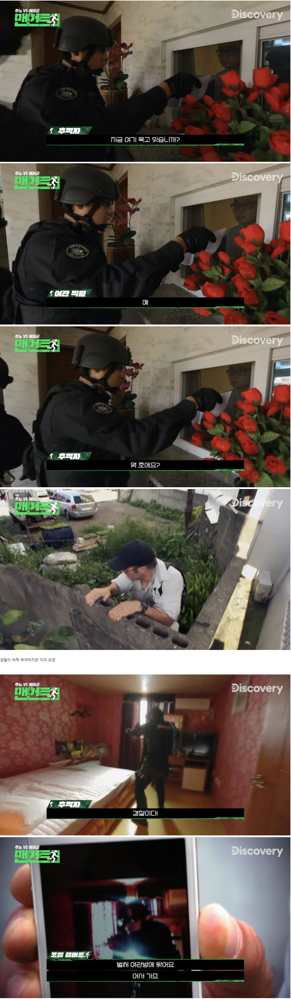
경찰이 바짝 추격하지만 이미 도망
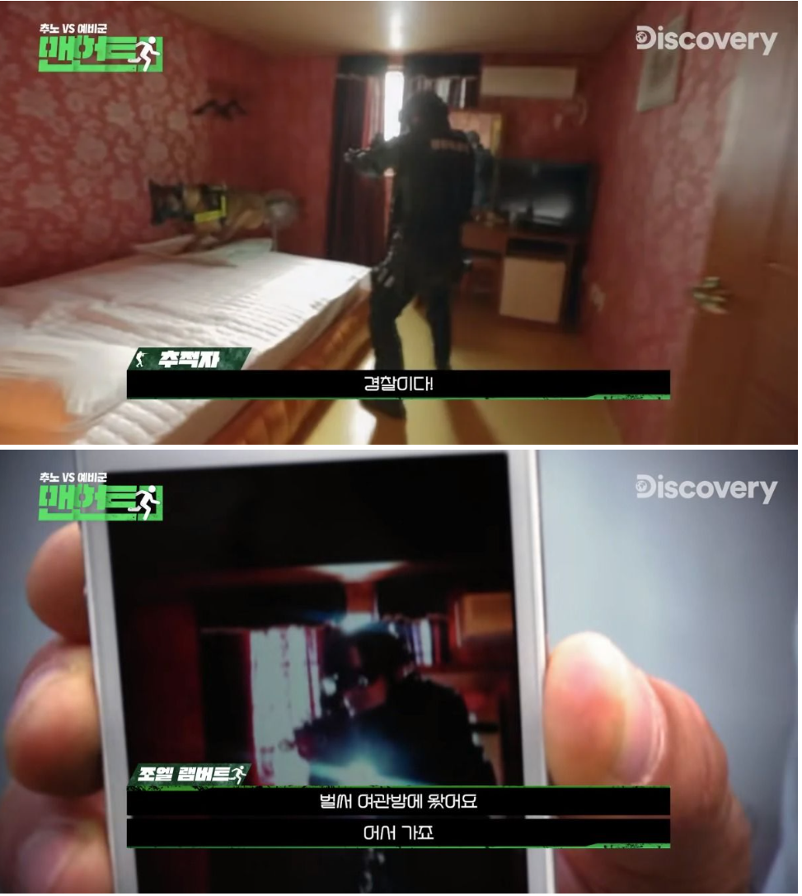
아까 설치한 앱이 빛을 발하는 중
경찰 들이닥치니까 바로 이메일 옴
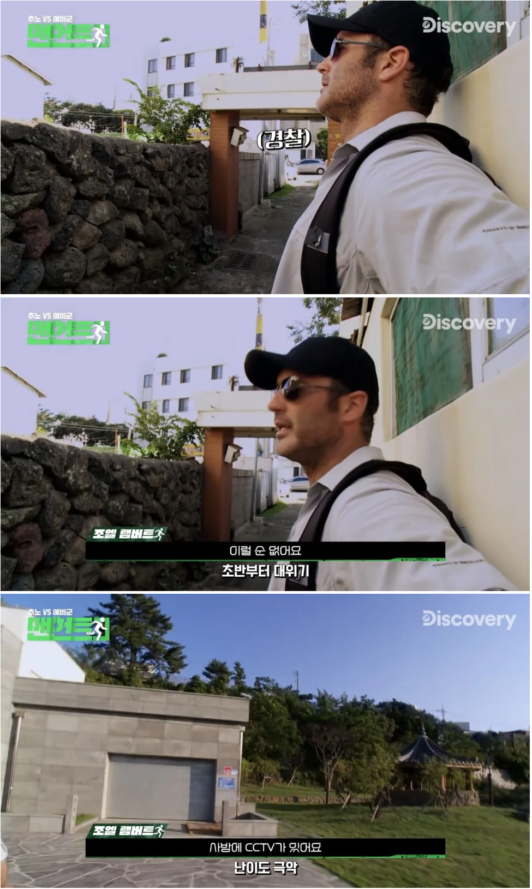
CCTV 드럽게 많음
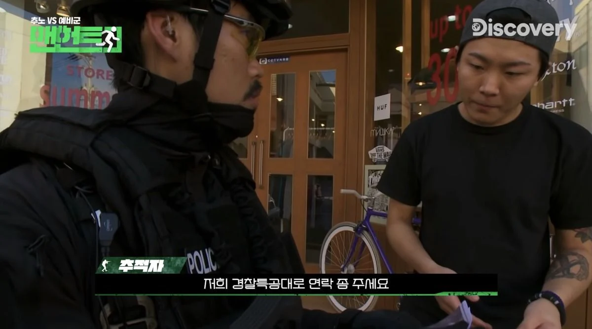
그저 어리둥절한 제주도 시민 feat. 이게 뭔 상황인지 모르겠다
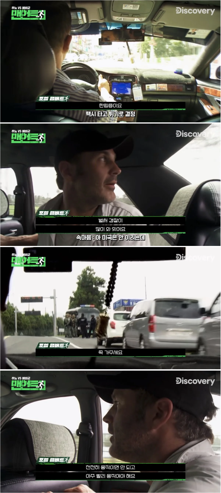
택시 타고 필사의 런 중 경찰 발견
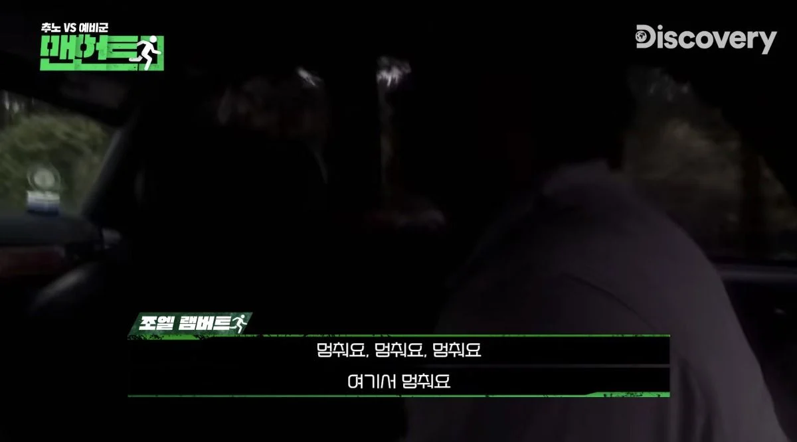
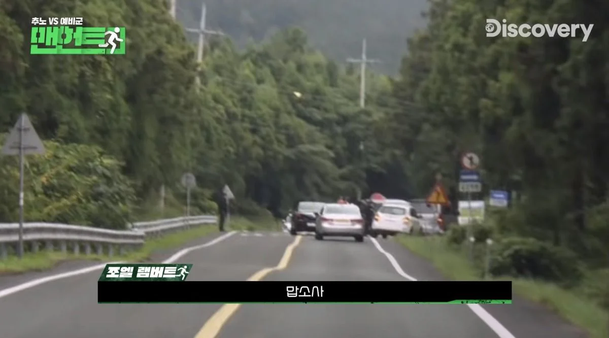
앞에도 보이는 경찰
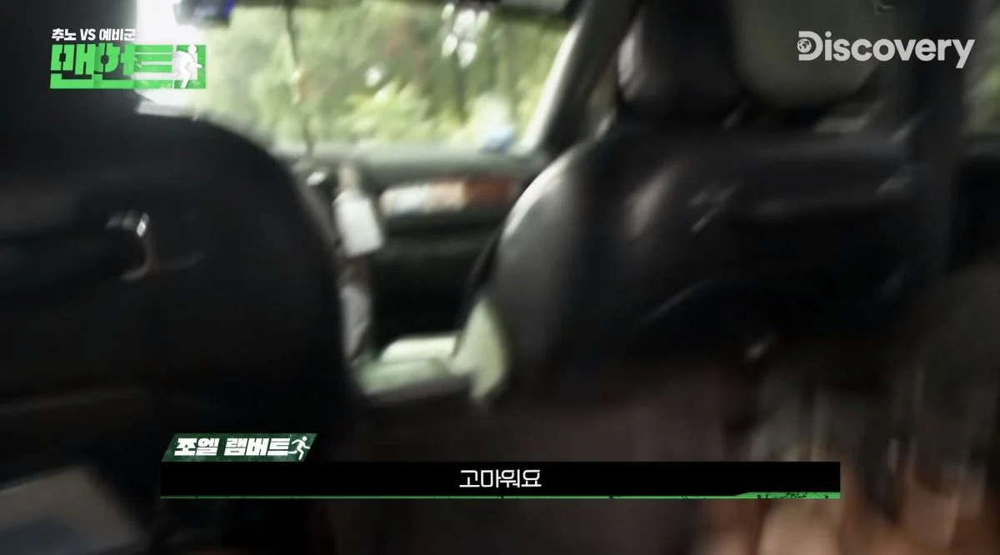
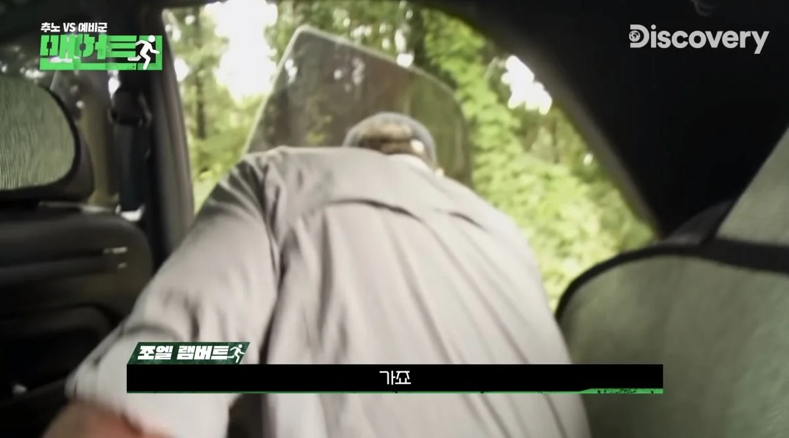
급박한 상황에서도 인사를 잊지 않는 이 시대의 매너남
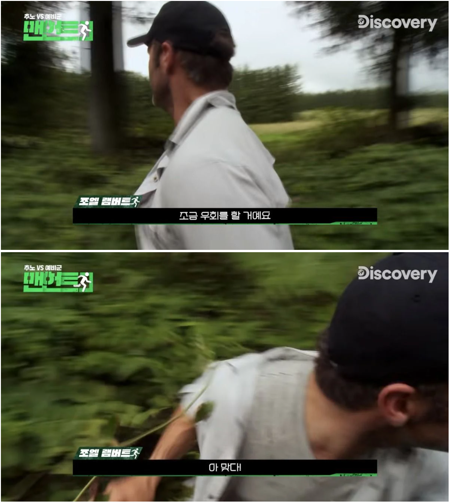
멋지게 옆길로 뛰어들더니 갑자기 소리 지름
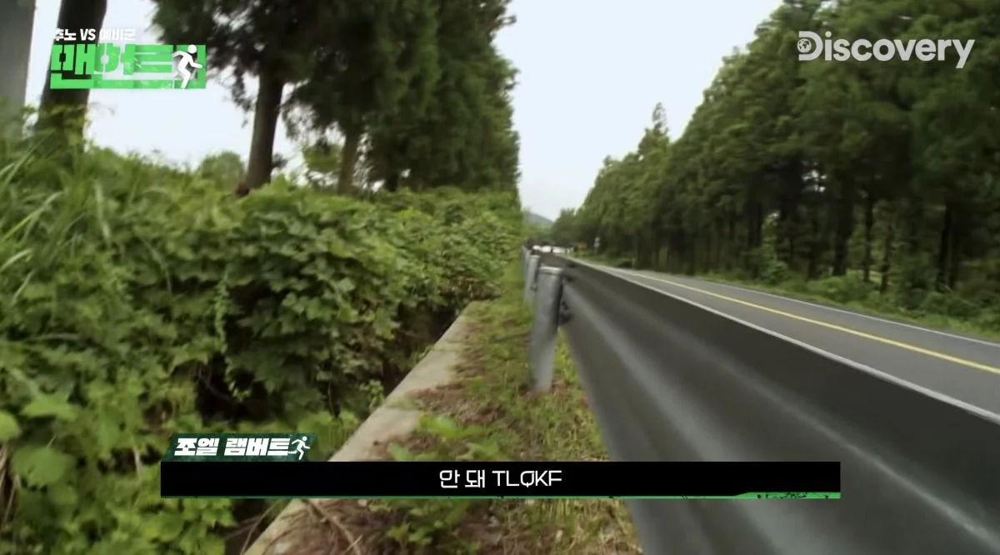
사운드를 채우는 삐ㅡ소리
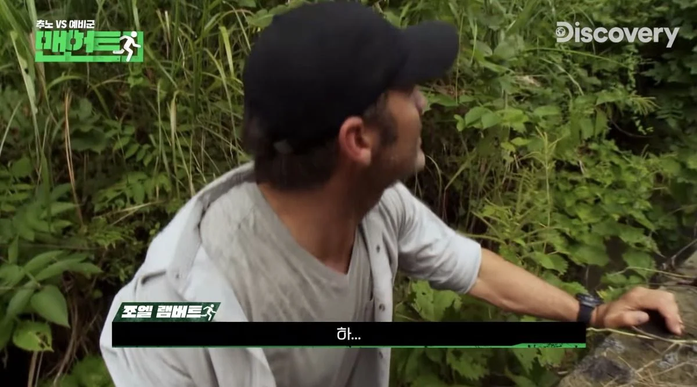
애끓는 한숨
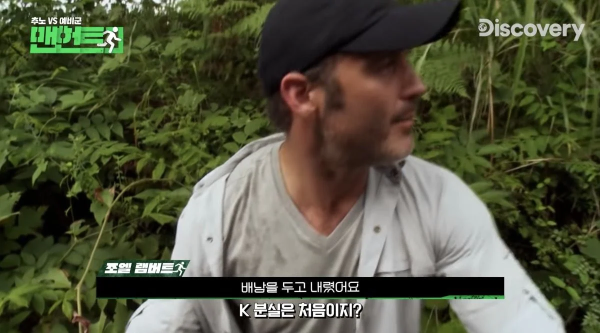
택시에 배낭 두고 내림 ㅇ0ㅇ
생존물품 빠잇👋
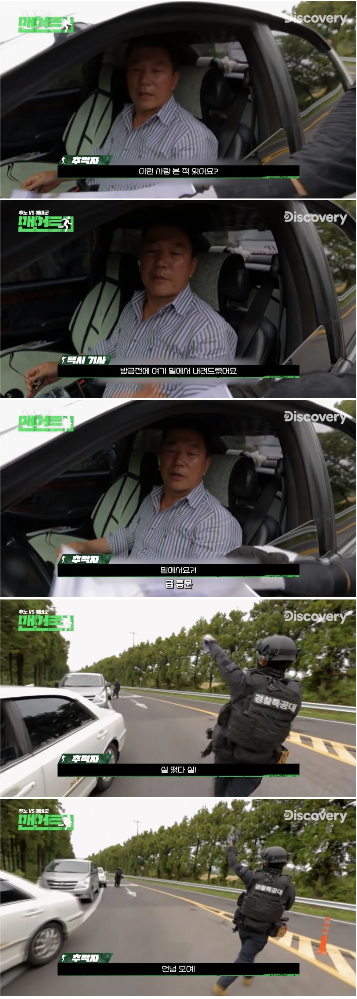
이와중에 배낭 잃은 관광객의 소식을 알고 신이 난 경찰특공대٩( ᐛ )و
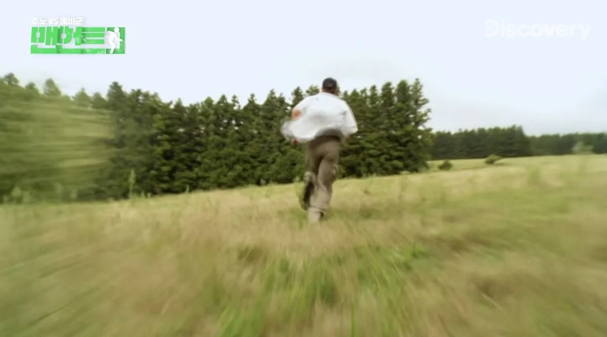
들판을 달리는 조엘
배낭 잃은 자의 성난 뒷모습
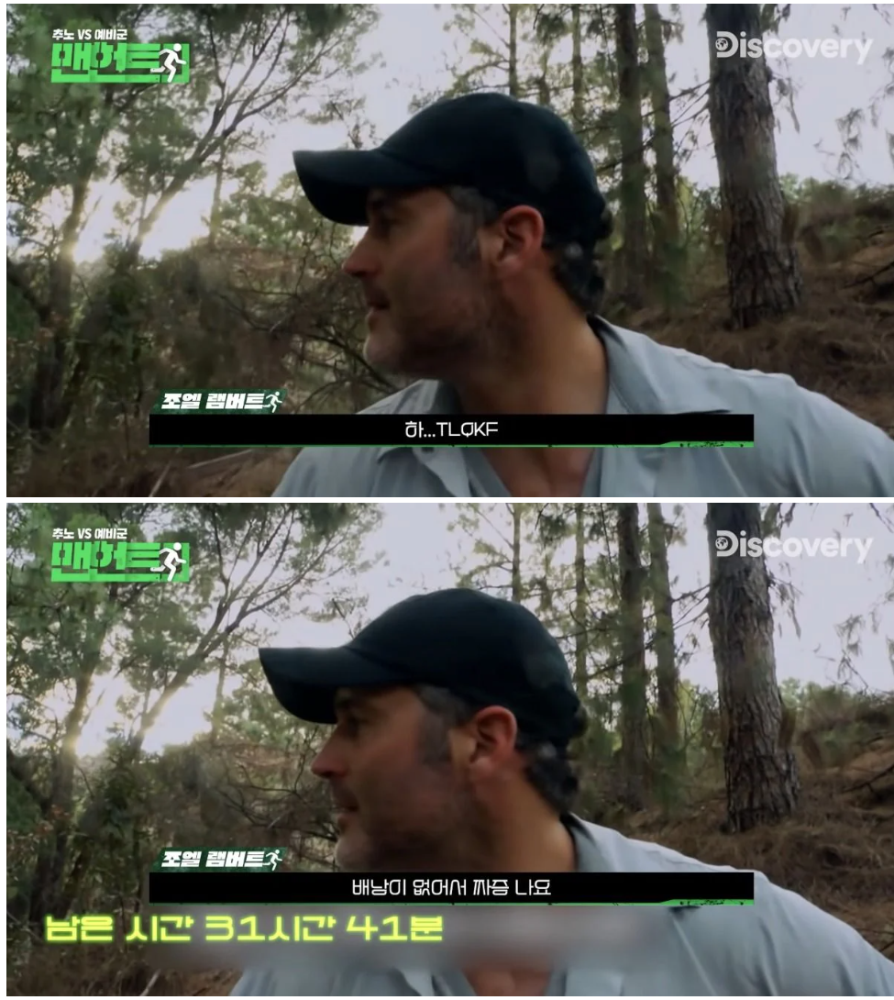
배낭만 생각하면 빡이 쳐요
과연 조엘은 무사히 런에 성공할 수 있을까?
확인시켜주고 싶지만 비공개로 영상이 내려감..
https://youtu.be/PetyrPPSVgI
댓글
수집 당시 댓글 8개
불멸의러너 · 3 일 전
바로 찾은게 대박이네 ㄷㄷ
픽돌이 · 3 일 전
재밌겠다 보고싶은뎅
가이거카운터 · 3 일 전
런닝맨에서도 형사랑 비슷한거 했었지
이럴럴로럴 · 3 일 전
왜 시ㅏㄹ ㅣ비공개야 궁금해
서강준 · 3 일 전
아 씨발!!!!!!!!!!!!!!!!!!!
K95Platinum · 3 일 전
이거보고 제주반도체 숏쳤다
오늘도야근이다 · 3 일 전
저거 본방에서 봤는데 결국 잡히긴 하더라 ...
todesangst · 3 일 전
지금보니 리얼로 찍긴 힘들고 어느정도 대본일듯ㅋㅋㅋ